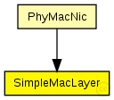
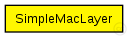

This documentation is released under the Creative Commons license
This documentation is released under the Creative Commons licenseC++ definition: click here
(no description)

The following diagram shows usage relationships between types. Unresolved types are missing from the diagram. Click here to see the full picture.
The following diagram shows inheritance relationships for this type. Unresolved types are missing from the diagram. Click here to see the full picture.
If a module type shows up more than once, that means it has been defined in more than one NED file.
| PhyMacNic (compound module) | (no description) |
| Name | Direction | Size | Description |
|---|---|---|---|
| lowerGateIn | input |
from the Phy layer |
|
| lowerGateOut | output |
to the Phy layer |
|
| lowerControlIn | input |
control from the Phy layer |
|
| lowerControlOut | output |
control to the Phy layer |
simple SimpleMacLayer { gates: input lowerGateIn; // from the Phy layer output lowerGateOut; // to the Phy layer input lowerControlIn; // control from the Phy layer output lowerControlOut; // control to the Phy layer }
This documentation is released under the Creative Commons license